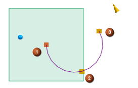
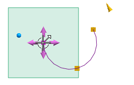
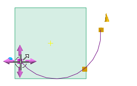
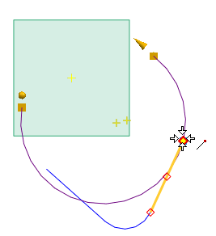

使用三点编辑圆弧
-
选择圆弧。
-
如果尚未被选中，在圆弧/圆(非关联)对话框中，从类型列表中选择三点画圆弧。
三点圆弧控制手柄出现。

 = 起点
= 起点 = 中点
= 中点 = 端点
= 端点 -
移动光标到起点处，注意到拖动手柄出现。

-
拖动起点到左侧，查看圆弧如何变化。

注意当您拖动起点时，圆弧的端点和终点保持固定。
-
拖动中点到旁边直线的端点处，以使圆弧在端点处相切于直线。

圆弧相切于直线，而圆弧的起点和终点保持固定。
-
关闭部件。